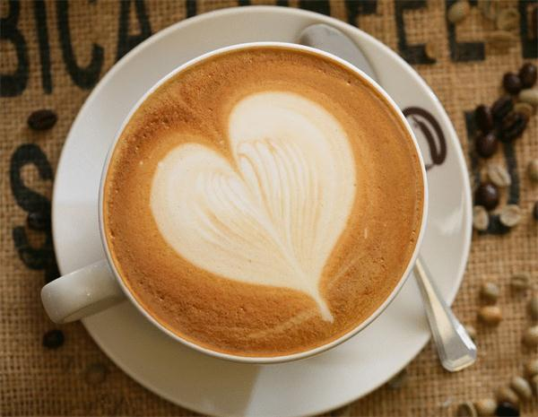

拿铁
“拿铁”不是咖啡。其实，拿铁（Latte）在意大利语里是“牛奶”的意思，如果你点一杯“拿铁”，
那么服务生只会给你上一杯牛奶。而意大利语的Caffè Latte指的才是拿铁。现在很多冷饮店
都会推出自己的“拿铁”系列，像“红茶拿铁”“抹茶拿铁”等等，其实就是奶茶而并没有咖啡的成分。
拿铁咖啡是意大利浓缩咖啡（Espresso）与牛奶的经典混合，意大利人也很喜欢把拿铁作为早餐
的饮料。意大利人早晨的厨房里，照得到阳光的炉子上通常会同时煮着咖啡和牛奶。喝拿铁的意
大利人，与其说他们喜欢意大利浓缩咖啡，不如说他们喜欢牛奶，也只有Espresso才能给普普
通通的牛奶带来让人难以忘怀的味道。
|